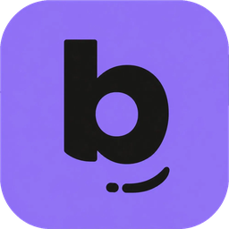
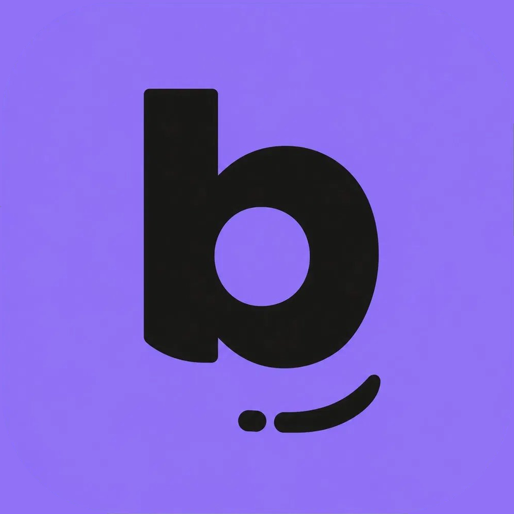

Metti le basi.
Parti dalle entrate e dalle spese fisse. La configurazione è guidata e puoi completarla in seguito.

Bada!ai tuoi soldi Google PlayUN PO’ DI ORDINE. PIÙ TRANQUILLITÀ.
Entrate, spese e obiettivi in una vista chiara. Organizza il tuo budget, tieni da parte un margine e scopri quello che resta. Tutto sul tuo telefono.
Scarica su Google Play Scopri come funziona
01 — DA DOVE SI COMINCIA
Conosci Bada!Parti dalle entrate e dalle spese fisse. La configurazione è guidata e puoi completarla in seguito.
Segna le spese per categoria o importa un CSV da rivedere prima di confermare. Anche un caffè trova il suo posto.
Consulta il mese tenendo conto di margine e obiettivi. Il margine è la quota che scegli di tenere da parte.
FACCIAMO DUE CONTI
Una parte ha una destinazione: le spese, la quota che scegli di tenere da parte e i tuoi obiettivi. Il disponibile ti aiuta a vedere quello che resta.
Qui puoi provare con dati fittizi. Cambia gli importi: il calcolo avviene in questa pagina, senza salvare o inviare i valori.
È una dimostrazione del sito. Il risultato nell’app dipende dai dati che inserisci, non dal saldo aggiornato della banca.
Esempio illustrativo: il risultato dipende dai dati inseriti.
Non
è una schermata dell’app. I valori non vengono salvati né inviati.
02 — UN POSTO PER OGNI CIFRA
Dal caffè di oggi al viaggio di domani.
Per le cose che tornano ogni mese.
Per quelle che non avevi
previsto.
E per quelle a cui tieni davvero.
IL QUOTIDIANO
Registra entrate e uscite e organizzale in categorie e sottocategorie. Il bilancio mensile, con grafici e indicatori, ti aiuta a vedere dove vanno i soldi.
QUELLO CHE VIENE DOPO
Le spese fisse le inserisci una volta e le pianifichi nei mesi dell’anno. Segui i versamenti verso gli obiettivi e scegli il tuo margine di sicurezza.
Backup automatico giornaliero nella cartella che scegli. Puoi recuperare solo i dati che vuoi ripristinare.
Tema chiaro, scuro o di sistema. Italiano e inglese. La valuta che scegli, senza conversione automatica.
Promemoria locali configurabili. Per ricordarti del budget, con i tuoi tempi.
BADA!, DA VICINO
Immagini dalla scheda Google Play.
Seleziona una schermata
per ingrandirla.
Disponibile, andamento del budget e categorie di spesa nella vista mensile.

Categorie e sottocategorie aiutano a ritrovare i movimenti e leggere le abitudini.

Segui le somme messe da parte e i progressi verso ciascun obiettivo.

Entrate, uscite e andamento dei mesi, per leggere insieme tutto l’anno.

Controlla i movimenti del CSV e scegli le categorie prima di importarli.

Tema, promemoria, backup e strumenti per importare o esportare i tuoi movimenti.
03 — LA PRIVACY, SENZA GIRI DI PAROLE
Il budget è personale.
Non serve condividerlo per capirlo
meglio.
Nessuna registrazione e nessun collegamento bancario. Inserisci tu i movimenti o importa un CSV.
Bada! funziona offline, conserva i dati sul dispositivo e non li invia a server.
Nessuna pubblicità o tracciamento nell’app. Il centro della schermata sono i tuoi conti.
Esportazioni e backup seguono le destinazioni che scegli. Una cartella sincronizzata può essere caricata dal relativo servizio. L’informativa spiega anche il backup di sistema Android.
Leggi l’informativa sulla privacyNo. Inserisci i movimenti oppure importa un CSV. Non c’è alcun collegamento al tuo conto bancario.
L’app funziona offline. Serve una connessione per scaricarla o aggiornarla da Google Play.
No. Puoi iniziare a usare Bada! senza registrarti.
Al momento Bada! è disponibile per Android.
Sì, da CSV, anche esportati dalla banca, con revisione prima della conferma. I formati possono variare: non è garantita la compatibilità con ogni banca.
Dopo aver scelto una cartella, l’app crea una copia giornaliera alla prima apertura della giornata. Se scegli una cartella sincronizzata, il relativo servizio può caricare la copia.
Sì. Scegli il backup e selezioni i dati da ripristinare.
Sì. Puoi scegliere il tema chiaro, scuro o di sistema, e l’italiano o l’inglese. Puoi anche scegliere la valuta: gli importi non vengono convertiti automaticamente.
IL TUO MESE. LE TUE SCELTE.
Conosci meglio il tuo budget.
Un movimento, una scelta, un mese
alla volta.
